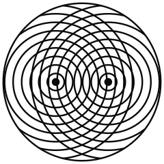
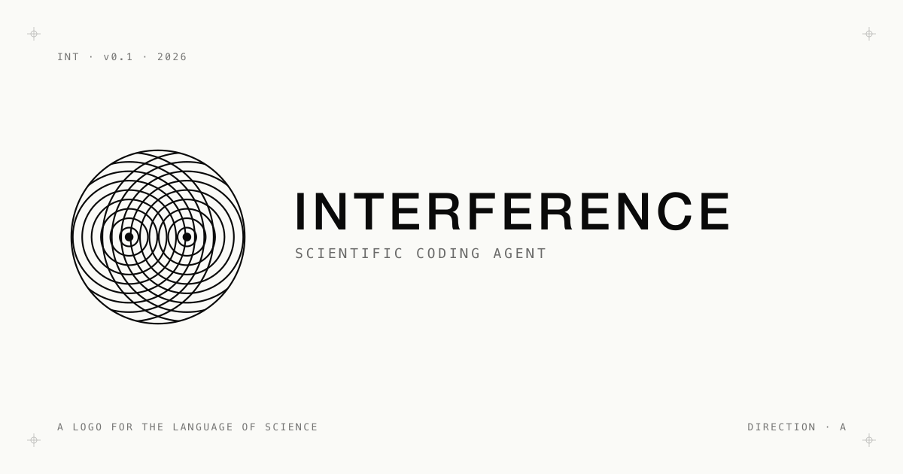
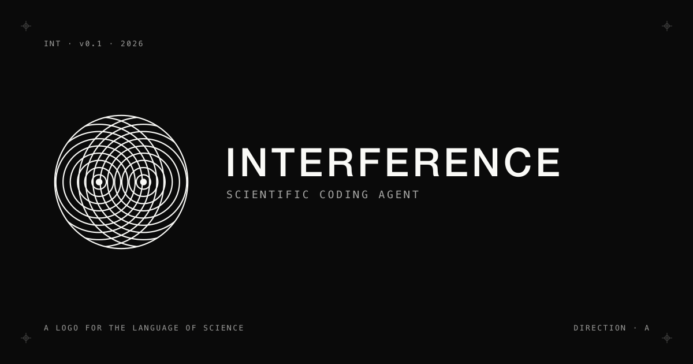
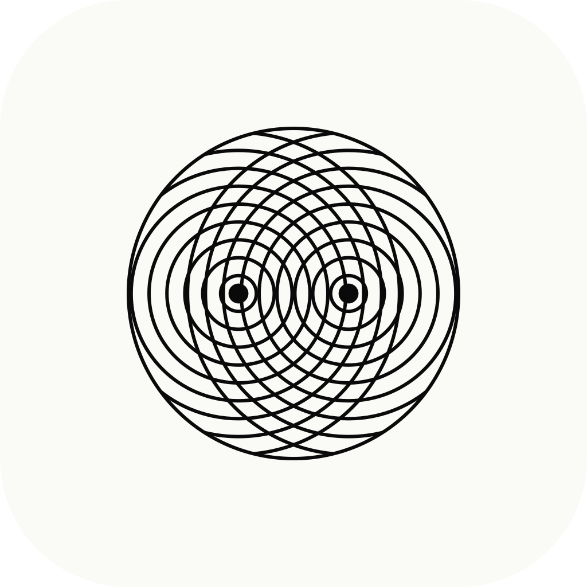
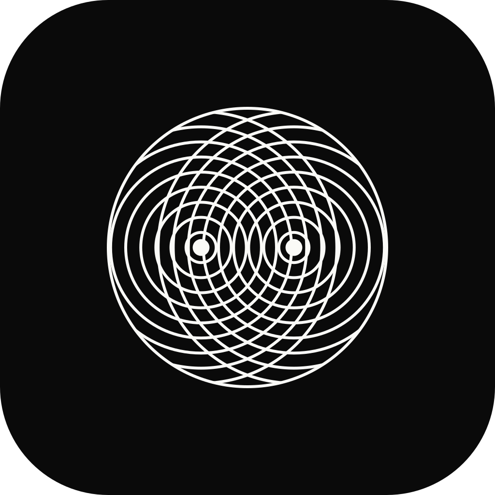
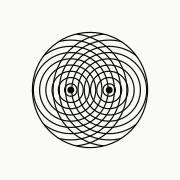
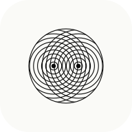
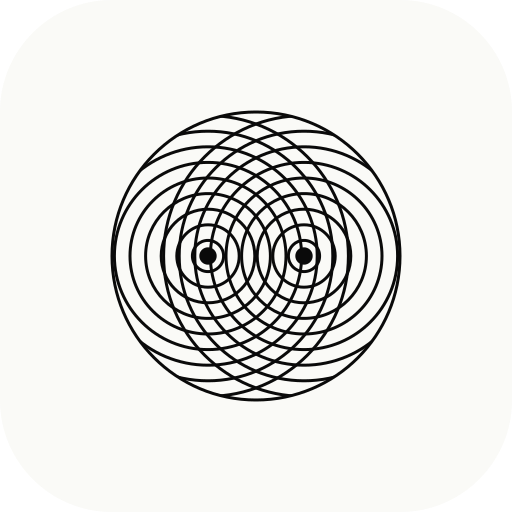
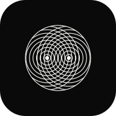
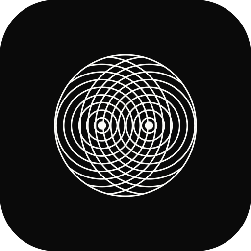

Interference — Logo · v0.1 · Maggio 2026
Direction A · The PatternLockup
Composizione orizzontale primaria. Usata in header di sito, firme, decks, pubblicazioni.
Logomark
L'icona autonoma. Usabile dove la parola sarebbe ridondante: app icon, avatar, watermark, stamp.
 A · MARK · CURRENTCOLOR
interference-mark.svg
A · MARK · CURRENTCOLOR
interference-mark.svg

A · MARK · BLACK interference-mark-black.svg A · MARK · WHITE
interference-mark-white.svg
A · MARK · WHITE
interference-mark-white.svg
Motion
Versione animata del mark. Due sorgenti coerenti emettono onde concentriche che si propagano e svaniscono — l'interferenza emerge dalla sovrapposizione. Adatta a splash screen, hero di sito, loader.
Wordmark
Solo tipografia. Quando lo spazio è stretto o il mark sarebbe troppo decorativo.
Social · OG Image
L'anteprima che appare quando il link al prodotto viene condiviso. Light per timeline chiare, dark per quelle scure.

OG · LIGHT · 1200×630 interference-og.png
OG · DARK · 1200×630 interference-og-dark.pngApp Icon
Versione applicazione, con safe area e angoli arrotondati. Light per home screen chiare, dark per scure.

A · APP ICON · LIGHT interference-app-icon-light.svg
A · APP ICON · DARK interference-app-icon-dark.svgFavicon
Stroke più spesso e meno cerchi, per restare leggibile a 16–32 px nelle tab del browser.
Favicon pack
Pack completo per il deploy del prodotto: ICO multi-size per i browser, PNG per iOS e Android, manifest per PWA.

Apple Touch · 180
PWA · 192
PWA · 512
PWA · 192 dark
PWA · 512 dark<link rel="icon" href="favicon.ico" sizes="any"> <link rel="icon" href="interference-favicon.svg" type="image/svg+xml"> <link rel="apple-touch-icon" href="interference-apple-touch-icon.png"> <link rel="manifest" href="site.webmanifest"> <meta name="theme-color" content="#0a0a0a"> <meta property="og:image" content="interference-og.png"> <meta name="twitter:card" content="summary_large_image">
File
- SVG source
- interference-mark.svg — mark, currentColor
- interference-mark-black.svg — mark, ink #0a0a0a
- interference-mark-white.svg — mark, paper #fafaf7
- interference-mark-animated.svg — mark animato, loop 3s
- interference-wordmark.svg — wordmark INTERFERENCE
- interference-lockup.svg — mark + wordmark + tagline
- interference-favicon.svg — variante semplificata 16–96 px
- interference-app-icon-light.svg — app icon, sfondo paper
- interference-app-icon-dark.svg — app icon, sfondo ink
- interference-apple-touch-icon.svg — source per Apple Touch Icon
- interference-og.svg — OG image source, light
- interference-og-dark.svg — OG image source, dark
- PNG export
- interference-og.png — 1200×630, light
- interference-og-dark.png — 1200×630, dark
- interference-apple-touch-icon.png — 180×180
- interference-icon-192.png — PWA, light
- interference-icon-512.png — PWA, light
- interference-icon-192-dark.png — PWA, dark
- interference-icon-512-dark.png — PWA, dark
- interference-favicon-16.png — 16×16
- interference-favicon-32.png — 32×32
- interference-favicon-48.png — 48×48
- Bundle
- favicon.ico — ICO multi-size (16+32+48)
- site.webmanifest — PWA manifest